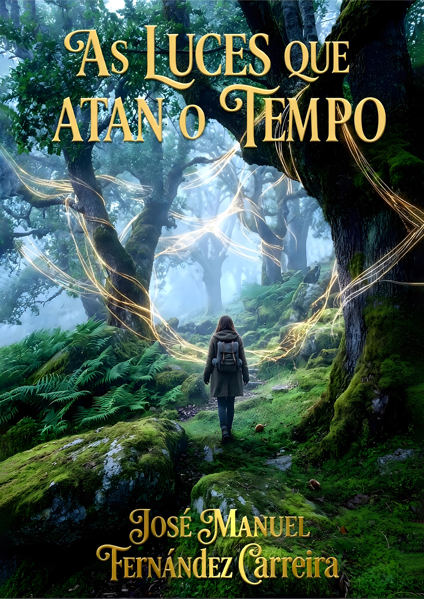
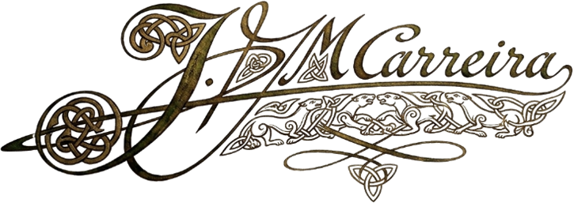

El misterio
Señales, nombres olvidados y un pacto roto que reclama su voz. Las Mouras y la Santa Compaña viven aquí como parte de la ficción, con sus propios hilos dorados.
Muy pronto podrás descubrir As luces que atan o tempo, una novela en la que Lúa, siguiendo las huellas de una herencia familiar, se adentra en los secretos de los soutos milenarios de O Courel. Un lugar donde el paisaje, la memoria y las antiguas leyendas parecen guardar sus propias respuestas.
Novela de José Manuel Fernández Carreira, ambientada en O Courel. Próximamente.
Quiero saber cuándo sale
Alguien llama a la puerta. Abres y no hay nadie, solo una castaña en el umbral. Está húmeda, tiene una marca extraña y, desde el bosque, llega una voz.
Así empieza a cambiar el mundo de Lúa. Llega al Courel con una maleta, una cámara y cuadernos para estudiar los soutos. Trae también una pregunta que no cabe en ninguna ficha: qué pasó con su abuela.
¿Descubre algo por casualidad, o algo la estaba esperando?
Señales, nombres olvidados y un pacto roto que reclama su voz. Las Mouras y la Santa Compaña viven aquí como parte de la ficción, con sus propios hilos dorados.
Antes que las presencias extrañas hay una ausencia familiar: palabras que los mayores no terminaron de decir y preguntas que se dejaron para otro día.
La Devesa da Rogueira, el Val das Mouras, el agua, las casas. Y junto a lo inquietante, el caldo, la lareira y el café de la mañana. Aquí el paisaje responde.
¿Qué hacemos con los silencios que nos dejan quienes nos precedieron?
El miedo de esta historia tiene que ver con perder: a alguien, una historia, un nombre. Por eso, junto a la inquietud, hay ternura. Lo que sigue prefiero que lo descubras leyendo.
Tres piezas compuestas para el libro. Escúchalas sin prisa, como quien camina bajo los castaños, y después escríbeme.

Banda sonora original · As luces que atan o tempo
Al pulsar reproducir, los tres temas suenan por orden y vuelven a empezar.
El libro aún no está a la venta. Si quieres que te avise cuando salga, reservar un ejemplar o proponerme una presentación en tu asociación, biblioteca o librería, deja aquí tu mensaje.
Te responderé yo mismo. También puedes escribir a jmfcarreira@gmail.com.
